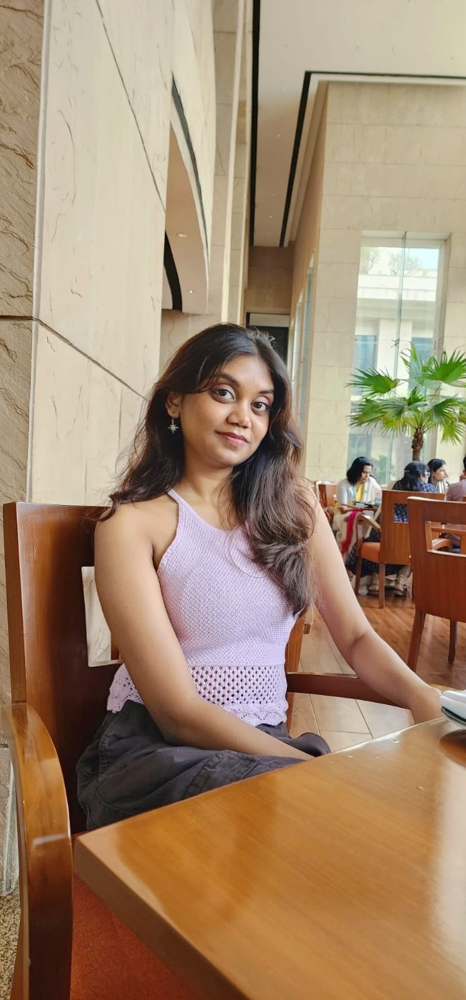

B.Tech IT Student | Java Developer | DSA Enthusiast | Game Builder
I’m Sanya, an Information Technology undergraduate with a strong interest in software development and problem-solving. I specialize in Java and enjoy building projects that strengthen my understanding of Object-Oriented Programming and logic building.
I’ve worked on projects involving DSA practice and game development, where I focused on writing clean, structured, and efficient code. I also enjoy expressing ideas through writing and continuously improving my communication skills.
I aim to grow as a developer who can build meaningful applications and solve real-world problems with clarity and creativity.
A Java-based 2D game built using Object-Oriented Programming concepts. It includes player movement, collision detection, and a structured game loop.
Tech: Java, OOP, Swing
View Project →A collection of Data Structures and Algorithms problems solved in Java to strengthen problem-solving skills.
Tech: Java, DSA
View Repository →Completed a virtual internship focusing on real-world business and analytical problem-solving.
View Work →Java • Object-Oriented Programming • Data Structures • Problem Solving • Git & GitHub
Built with 💗 using HTML & CSS